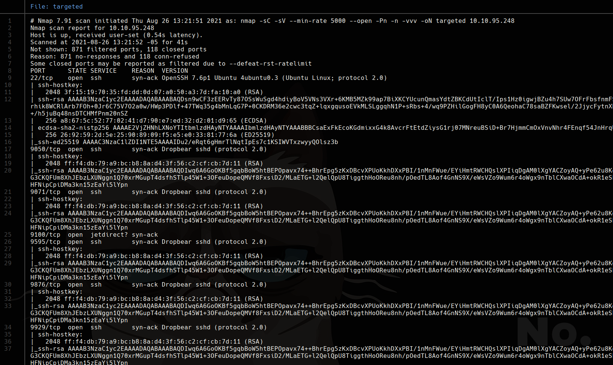

TryHackMe
Medium
Linux
SSH
Port Scanning
Enumeration
LookingGlass
Maquina con cientos de puertos SSH abiertos como mecanismo de confusion; encontrar el servicio real.
cat4clysm
Herramientas utilizadas
nmap
masscan
ssh
Scanning
root@kali:~$
sudo nmap -sS -p- --open --min-rate 5000 -vvv -Pn -n 10.10.95.248 -oG allports
nmap -sC -sV --min-rate 5000 --open -Pn -n 10.10.95.248 -oN targetedSe descubren cientos de puertos SSH abiertos (9000-13999).

Lecciones aprendidas
- Los servicios SSH en multiples puertos pueden ser un rabbit hole; identificar el real es clave.
- La enumeracion de puertos completa con -p- es esencial para no perderse servicios inusuales.
- Algunos CTF usan ports scanning masivo como mecanismo de 'port knocking' oculto.